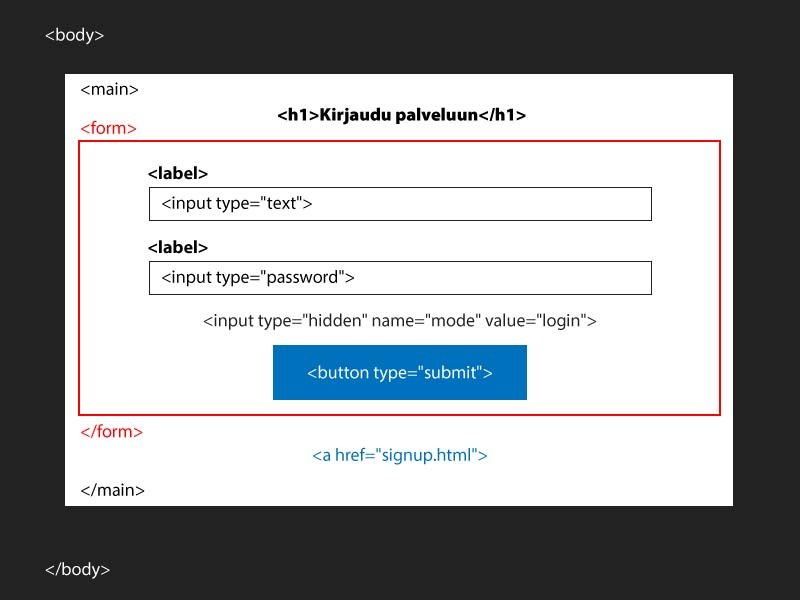
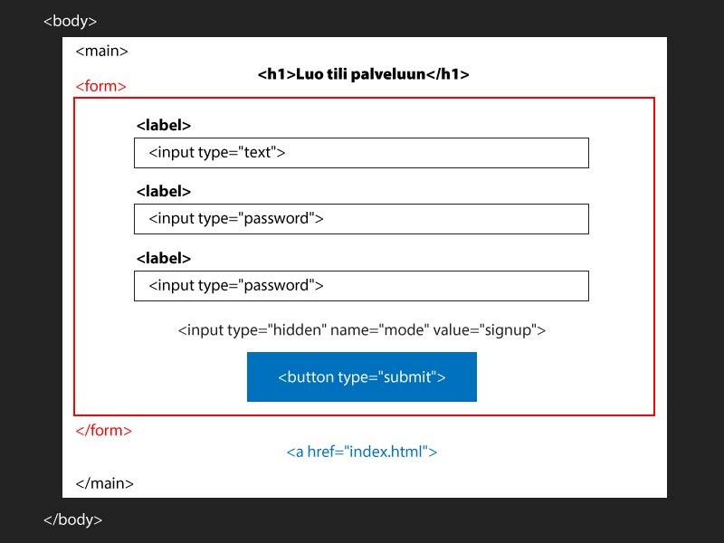
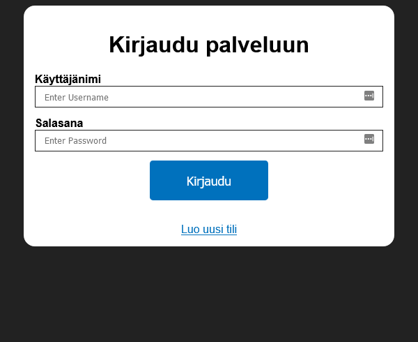
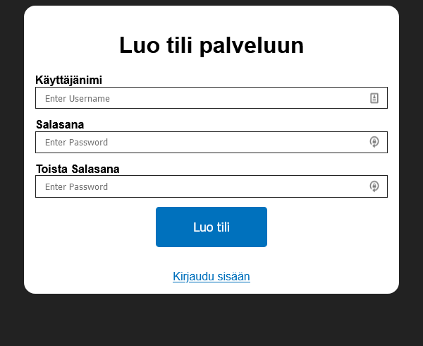
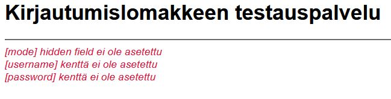
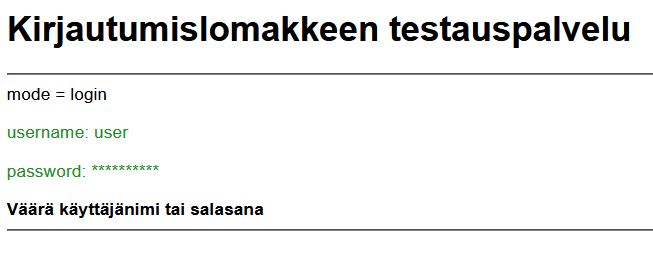
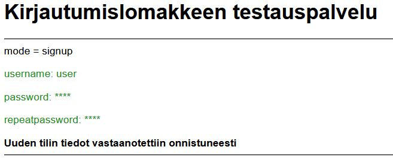

Harjoitus 6 - Kirjautumislomake
html_css_basics
|
├── demos
│ └── ...
|
├── exercises
│ ├── ...
│ └── e6
│ ├── style.css
│ ├── index.html
│ └── signup.html
|
Tehtävä
- Toteuta index.html, jossa on kirjautumislomake ja linkki signup.html sivulle
- Toteuta signup.html sivu, jossa on tilin luontilomake ja linkki index.html sivulle
- Molempien lomakkeiden lähetysosoite on https://tredu-form-app.herokuapp.com/palvelu.php
- Tyylittele lomakkeet CSS:llä


index.html
Lisää lomakkeeseen form-tagien sisälle piilotettu kenttä, joka kertoo vastaanottavalle sivulle, että kyseessä on kirjautuminen:
<input type="hidden" name="mode" value="login">

signup.html
Lisää lomakkeeseen form-tagien sisälle piilotettu kenttä, joka kertoo vastaanottavalle sivulle, että kyseessä on uuden tilin luonti:
<input type="hidden" name="mode" value="signup">

CSS
- Laita bodylle tumma taustaväri
- Vaihda fontiksi Arial
- Keskitä main (margin: 0 auto;)
- Aseta mainin taustaväriksi valkoinen
- Rajoita mainin maksimileveys 500px
- Pyöristä kulmat (border-radius: 1em;)
- Keskitä teksti (text-align: center;)
- Tasaa form sisällä oleva teksti vasemmalle
- Aseta form leveys 100%
- Aseta input leveys 100%
- Aseta (box-sizing: border-box;), jotta kentät eivät tule yli lomakkeesta
- Lisää inputeille paddingia
- Muokkaa inputtien reunaviivaa
- Aseta inputeille alamarginaali 1em
- Lisää napeille (button) paddingia
- Vaihda nappien taustaväri
- Poista nappien ääriviivat (border: none;)
- Vaihda nappien testi valkoiseksi
- Aseta (display: block;)
- Kasvata fontin kokoa
- Keskitä nappi (margin: 0 auto;)
- Vaihda napin väriä vaaleammaksi kun hiirin on napin päällä (button:hover{...})
- Tee kursorista sormi, kun se on napin päällä (cursor: pointer;)
- Kumoa vieraillun linkin värin vaihtuminen antamalla linkkityylit
sekä normaalille että visited pseudon linkeille a, a:visited{…}
- Lisää 'Luo uusi tili' linkille ylämarginaalia 2em
- Aseta (display:block;)
- Vaihda linkin väri
Testaa lomaketta
https://tredu-form-app.herokuapp.com/palvelu.php
Jos vierailet sivulla selaimen kautta, sen pitäisi näyttää otsikko Kirjautumislomakkeen testauspalvelu
ja kertoa, ettei kirjautumis-modea, käyttäjänimeä tai salasanaa ole asetettu.

Kun lähetät lomakkeella onnistuneesti username, password ja mode=login (hidden filed) kenttien tiedot, sivuston tulisi näyttää käyttäjänimi, salasanatähdet ja kertoa oliko salasana oikein.

Kun lähetät lomakkeella onnistuneesti username, password, repeatpassword ja mode=signup (hidden filed) kenttien tiedot, sivuston tulisi näyttää käyttäjänimi ja molempien salasanojen tähdet.
